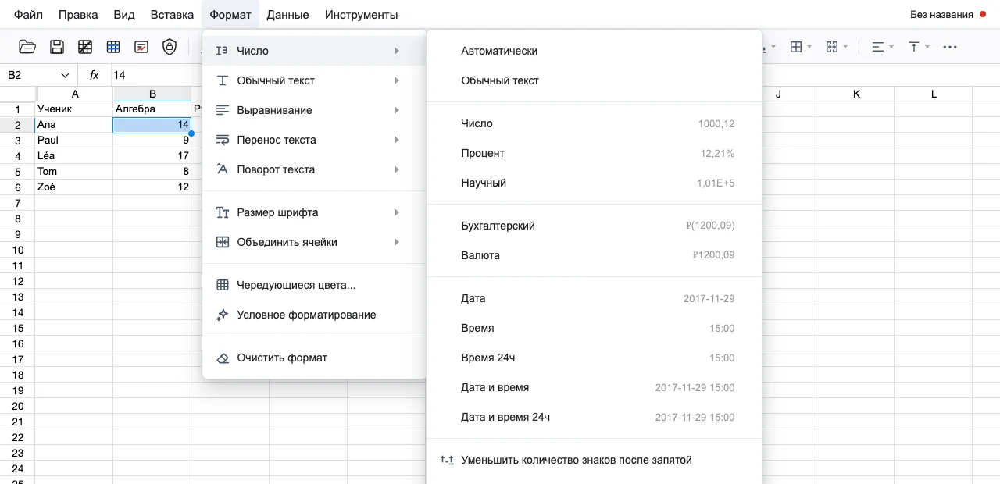

Интерфейс

Сверху вниз: строка меню, панель кнопок, строка формул, лист, вкладки листов и масштаб.
Меню
| Меню | Содержание |
|---|---|
| Файл | открыть, сохранить, печать |
| Правка | отменить, повторить, заполнить вниз, вправо |
| Вид | сетка, закрепить |
| Вставка | изображение, диаграмма, флажок, раскрывающийся список |
| Формат | число, текст, выравнивание, объединение, чередующиеся цвета, условное форматирование |
| Данные | сортировка и фильтр |
| Инструменты | защита, это руководство (Руководство пользователя), DocTools, исходный код, версия (About...) |
Галочка отмечает включённый параметр: видимая сетка, закреплённые ячейки, полужирный, фильтр, защищённая книга.

Панель кнопок
| Кнопка | Назначение |
|---|---|
| открыть, сохранить | |
| показать или скрыть сетку | |
| чередующиеся цвета | |
| условное форматирование | |
| защита; голубая, когда книга защищена | |
| вставить диаграмму | |
| вставить изображение | |
| отменить, повторить | |
| очистить оформление | |
| процент, меньше или больше десятичных знаков | |
| Автоматически, Arial, 10 | числовой формат, шрифт, размер |
| полужирный, курсив, подчёркнутый | |
| цвет текста, цвет фона | |
| границы, объединение | |
| выравнивание, поворот, перенос | |
| закрепить | |
| автосумма и другие формулы | |
| сортировка и фильтр |
Стрелка кнопки открывает её варианты; сама кнопка повторяет последний. В узком окне последние кнопки находятся за .
Строка формул
- Слева поле имени: адрес выделения или имя диапазона. Его стрелка показывает именованные диапазоны и открывает диспетчер имён.
- Справа от fx — содержимое ячейки вместе с формулой: его можно изменить там же.
Лист
- Щелчок правой кнопкой открывает меню в зависимости от места: ячейка, заголовок столбца или строки, вкладка листа.
- На новом листе 84 строки и 60 столбцов (от A до BH). Новые добавляются щелчком правой кнопкой, Вставить (строки и столбцы).
- Синий маркер в углу выделения заполняет.
Вкладки и масштаб
Внизу добавляет лист, показывает все листы (листы). Справа − и + меняют масштаб; щелчок по проценту предлагает от 10 % до 400 %.
Отмена
или Ctrl Z отменяет, , Ctrl Y или Ctrl Shift Z повторяет: ввод, вставку, оформление, добавление строк. История начинается заново, когда открывают книгу, показывают или скрывают сетку, защищают книгу, добавляют имя или правило условного форматирования. Диаграммы в неё не входят: их изменяют или удаляют их кнопками.